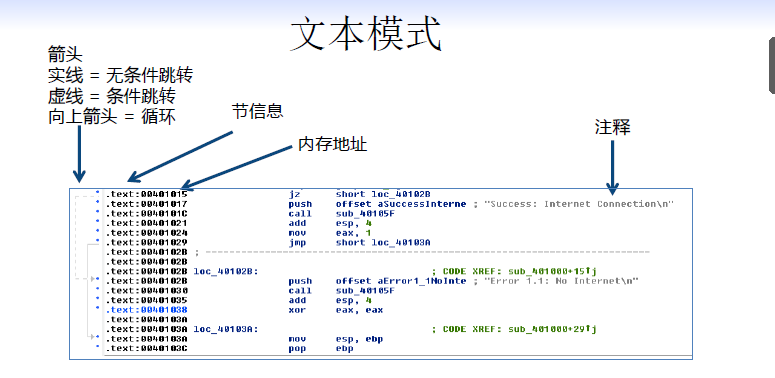

汇编语言与逆向技术基础 八、静态逆向技术
知识点
逆向技术
IDA Pro 简介
IDA Pro 窗口
IDA Pro 的操作
交叉引用
函数分析
图形化显示
增强反汇编的相关功能
逆向技术
逆向工程
逆向工程（又称 逆向技术 ），是一种产品设计技术再现过程
- 对一项目标产品进行逆向分析及研究，从而演绎并得出该产品的处理流程、组织结构、功能特性及技术规格等设计要素，以制作出功能相近，但又不完全一样的产品。
逆向工程源于商业及军事领域中的硬件分析
其主要目的是在不能轻易获得必要的生产信息的情况下，直接从成品分析，推导出产品的设计原理
软件逆向工程
软件逆向工程(Software Reverse Engineering)是指根据软件程序的反汇编代码（静态）和执行过程（动态），通过逆向分析来推导出软件具体的实现方法。
软件逆向工程可能会被误认为是对知识产权的严重侵害，但是在实际应用上，反而可能会保护知识产权所有者。
- 漏洞发掘
- 取证
- 性能分析
- 软件保护
逆向分析技术
静态分析
- IDA Pro
动态分析
- OllyDbg
- WinDbg
IDA Pro 简介
IDA Pro 是 Hex Rays 公司出品的一款交互式反汇编工具支持 32 位 和 64 位 程序的反汇编
IDA Pro
函数发现
栈分析
call 和 jmp 指令的区别：call指令会对当前指令的下一条指令进行压栈操作，来实现函数的返回，而jmp不会压栈
A函数调用B函数，A叫caller，B叫callee
局部变量的识别
FLIRT 快速的库函数识别与标记
- Fast Library Identification and Recognition Technology
IDA Pro 除了支持 PE 文件格式 ，还支持 DOS 、 UNIX 、Mac 、 Java 、 .NET 等平台的文件格式
IDA Pro 会自动识别处理器类型
IDA 是 按区块装载 PE 文件的，例如 .text 代码块 、 .data 数据块 、 .rsrc 资源块 等。
在默认情况下， IDA Pro 的反汇编代码中不包含 PE 头或资源节。
IDA Pro 窗口
图形模式（代码块）：在图形模式中，IDA Pro 默认不显示行号 、 操作码，显示一个一个基本块的关系
文本模式
反汇编窗口
箭头
红色：False 分支
绿色：True 分支
蓝色：无条件跳转
循环：向上的箭头
文本模式

函数窗口
列举所有函数
- 可以发现 规模庞大的函数 、 规模很小的函数。
名字窗口
列举 内存 地址的名字 ，包括函数名 、代码 的名字 、数据 的名字 和字符串
字符串窗口
显示内存中识别出来的所有字符串
导入表窗口
列出程序导入的所有函数
导出表窗口
列出一个函数所有导出的函数
其它窗口
IDA Pro 操作
Import 和 Strings 窗口的导航
双击字符串会跳转到反汇编窗口
链接 Link
在反汇编窗口双击地址， IDA Pro 会跳转到地址所在的反汇编窗口
链接类型
sub 前缀的链接
- 函数的地址
loc 前缀的链接
- 跳转地址
IDA Pro 的操作纪录（History）
前进、后退按钮，跳转到之前或者周后的操作状态
导航栏 Navigation Band
浅蓝色 : 链接库的代码 Library code
红色 : 编译器代码 Compiler generated code
深蓝色 : 用户写的代码 Analyze this
跳转到指定地址
快捷键 g
跳转到内存地址或者地址名
搜索
在反汇编窗口搜索
- 立即数
- 字符串
- 字节
- 字节序列
交叉引用 Cross References
代码的交叉引用 CODE XREF
CODE XREF 显示该函数在什么地方被调用了
默认设置只显示两处被调用的内存地址
鼠标 放置在 CODE XREF 的地址上，会弹出引用该数据地址上的反汇编信息
双击 CODE XREF 的地址，会跳转到该地址的反汇编窗口
查看所有的 XREF 地址
点击函数名，然后按“ X ”键
数据的交叉引用 DATA XREF
鼠标 放置在 DATA XREF 的地址上，会弹出引用该数据地址上的反汇编信息
双击 DATA XREF 的地址，会跳转到该地址的反汇编窗口
函数分析
函数和参数的识别
IDA Pro 会自动识别函数，并给函数、函数的参数、函数的局部变量进行命名
地址从高到低：参数、返回值、（基地址ebp）、变量
默认的命名规则
局部变量（local variable）
-
前缀 : var_
-
后缀 : 相对 EBP 的偏移值
-
偏移值为负值
参数（argument）
-
前缀： arg
-
后缀：相对于 EBP 的偏移值
-
偏移为 正值
参数和局部变量
图像化显示
IDA Pro 的 Graphing Options
Flow chart
- 显示当前函数的控制流图
Function calls
- 显示整个程序的函数调用图
增强反汇编的相关功能
内存地址的重命名
-
在 IDA Pro 中把一个函数名重命名为一个有意义的字符串，例如 sub_401000 重命名为 ReverseBackdoorThread
-
重命名后，所有交叉引用的信息会自动更新
注释
-
冒号 (:)，添加注释，不更新交叉引用 XREF
-
分号 (;)，添加注释，并更新交叉引用 XREF 的信息
数字格式的转化
-
默认显示十六进制的数字
-
右键菜单中可以选择其它的数字格式
使用符号常量
- 使 Windows API 函数的参数更加清晰
重新定义代码和数字
-
U : 撤销 IDA 对函数、数字的定义
-
C : 把原始数据定义为代码
-
D : 把原始数据定义为 BYTE, WORD, DWORD
-
A : 把原始数据定义为 ASCII 字符串
Plug-ins 脚本
IDC (IDA‘s scripting language) 和 Python scripts available (link Ch6a)